Глава 6 АВЛ-дерево
1 Определение дерева оптимального поиска
2 Точный алгоритм построения ДОП
3 Приближенные алгоритмы построения ДОП
1 Определение дерева оптимального поиска
До сих пор предполагалось, что частота обращения ко всем вершинам дерева поиска одинакова. Однако встречаются ситуации, когда известна информация о вероятностях обращения к отдельным ключам. Обычно для таких ситуаций характерно постоянство ключей, т.е. в дерево не включаются новые вершины и не исключаются старые и структура дерева остается неизменной. Эту ситуацию иллюстрирует сканер транслятора, который определяет, является ли каждое слово программы (идентификатор) служебным. Статистические измерения на сотнях транслируемых программ могут в этом случае дать точную информацию об относительных частотах появления в тексте отдельных ключей.
Припишем каждой вершине дерева Vi вес wi, пропорциональный частоте поиска этой вершины (например, если из каждых 100 операций поиска 15 операций приходятся на вершину V1, то w1=15). Сумма весов всех вершин дает вес дерева W. Каждая вершина Vi расположена на высоте hi, корень расположен на высоте 1. Высота вершины равна количеству операций сравнения, необходимых для поиска этой вершины. Определим средневзвешенную высоту дерева с n вершинами следующим образом: hср=(w1h1+w2h2+...+wnhn)/W. Дерево поиска, имеющее минимальную средневзвешенную высоту, называется деревом оптимального поиска (ДОП).
Пример. Рассмотрим множество из трех ключей V1=1, V2=2, V3=3 со следующими весами: w1=60, w2=30, w3=10, W=100. Эти три ключа можно расставить в дереве поиска пятью различными способами.
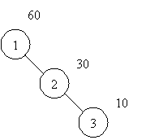
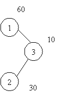
1. hср=1.7
2. hср=1.5
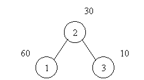
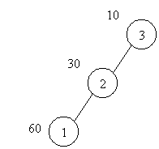
3. hср=1.7
4. hср=2.5
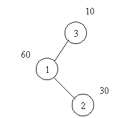
5. hср=2.2
Рисунок 31 - Различные деревья поиска с вершинами V1=1, V2=2, V3=3
Легко видеть, что минимальной средневзвешенной высотой обладает дерево 1 на рисунке 57, которое представляет собой список или вырожденное дерево. Дерево 3 не является деревом оптимального поиска, хотя представляет собой идеально сбалансированное дерево. Очевидно, для минимизации средней длины пути поиска нужно стремится располагать наиболее часто используемые вершины ближе к корню дерева.
Задача построения ДОП может ставится в двух вариантах:
Известны вершины и их веса.
Вес вершины определяется в процессе работы. Например, после каждого поиска вершины ее вес увеличивается на 1. В этом случае необходимо перестраивать структуру дерева при изменении весов.
Далее будем рассматривать задачу построения ДОП с фиксированным набором ключей и их весов.
2 Точный алгоритм построения ДОП
Поскольку число возможных конфигураций из n вершин растет экспоненциально с ростом n, то решение задачи построения ДОП при больших n методом перебора нерационально. Однако деревья оптимального поиска обладают свойствами, которые позволяют получить алгоритм построения ДОП, начиная с отдельных вершин с последовательным включением новых вершин в дерево. Далее будем считать, что множество вершин, входящих в дерево, упорядочено. Поскольку вес дерева остается неизменным, то вместо средневзвешенной высоты будем рассматривать взвешенную высоту дерева: P=h1w1+h2w2+...+hnwn
Свойство 1. Для дерева поиска с весом W справедливо соотношение P=PL+W+PR, где PL, PR - взвешенные высоты левого и правого поддеревьев корня.
Доказательство. Пусть вершина Vi с весом wi является корневой для некоторого i=1, ...n. Поскольку левое и правое поддеревья являются деревьями поиска, то в левое поддерево входят вершины V1, V2, ..., Vi-1, а в правое - Vi+1, ..., Vn. Взвешенные высоты этих поддеревьев вычисляются следующим образом.
PL = (h1-1)w1+(h2-1)w2+...+(hi-1-1)wi-1
PR = (hi+1-1)wi+1+ ...+ (hn-1)wn
Рассмотрим выражение взвешенной высоты для всего дерева, замечая, что hi=1
P=h1w1+h2w2+...+hnwn= (h1-1)w1 + w1+(h2-1)w2+ w2...+(hi-1-1)wi-1 + wi-1 +
+ wi + (hi+1-1)wi+1+ wi+1 ...+ (hn-1)wn + wn = PL+W+PR
Свойство 2. Все поддеревья дерева оптимального поиска также являются деревьями оптимального поиска для соответствующих подмножеств вершин.
Доказательство. Предположим, что одно из поддеревьев, например, правое, не является ДОП, т.е. существует дерево поиска с тем же множеством вершин, но с меньшей взвешенной высотой. Тогда по свойству 1 взвешенная высота всего дерева также не является минимальной. Данное противоречие доказывает свойство 2.
На
основе приведенных свойств можно разработать точный алгоритм
построения ДОП. Обозначим Tij
- оптимальное поддерево, состоящее из вершин Vi+1,
..., Vj. Введем матрицу
АR=||Arij||,
0 i,jn
элементы которой содержат номер корневой вершины поддерева Tij,
0ii
i,jn
элементы которой содержат номер корневой вершины поддерева Tij,
0ii
Используя свойство 2, величины Awij, Apij можно вычислить рекуррентно по следующим соотношениям (для всех возможных поддеревьев):
Awij=Awi,j-1+Awj,
0 i < j n (1)
Apij=Awij+min
(Api,k-1+Apk,j), 0 i < j n
(2)
i
Во
время вычислений будем запоминать индекс k*,
при котором достигается минимум во втором соотношении. Значение k*
является индексом корневой вершины поддерева Tij
во всем множестве вершин. Занесем в матрицу АR
k* -индекс
корня Tij, т.е. Arij
= k*, 0i
Идея построения дерева состоит в следующем. В матрице АR берем значение Aro,n (номер корневой вершины всего дерева в упорядоченном массиве вершин), пусть оно равно k. Добавляем вершину Vk в дерево, используя обычный алгоритм добавления вершин в дерево поиска. Затем из матрицы АR берем значения Aro,k-1 и добавляем вершину с этим номером в левое поддерево. Далее берем Ark,n и добавляем вершину с этим номером в правое поддерево и т.д.
Пример.
Построить дерево оптимального поиска с вершинами V1=1,
V2=2, V3=3
и весами w1=60, w2=30,
w3=10. Сначала вычислим
Awij, Apij,
Arij, 0i
T00, T11, T22, T33 - пустые поддеревья
T01, T12, T23 - поддеревья из одной вершины (1), (2), (3)
T02, T13 - поддеревья из двух вершин (1,2) и (2,3)
T03 - поддерево из трех вершин (1,2,3)
По формулам (1) и (2) вычислим элементы матрицы весов AW и элементы матрицы взвешенных высот AP, значения матрицы АR запишем в верхних уголках ячеек матрицы АP.
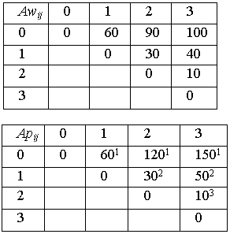
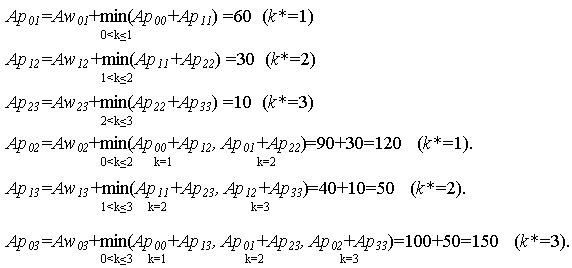
Корневой вершиной будет вершина V1, поскольку Аr0,3=1. Левое поддерево пустое, корень правого поддерева - вершина V2 (r1,3=2) и т.д. Полученное дерево показано на рисунке.
Рисунок 32 - ДОП для w1=60, w2=30, w3=10
Поскольку
существует около n2/2
значений Аpij ,
а вычисление (2) требует выбора одного из 0
 .
Д. Кнут отмечает, что можно избавиться от одного множителя n
и тем самым сохранить практическую ценность алгоритма. Поиск Аrij
можно ограничить, то есть сократить число вычислений до j-i
(если найден корень оптимального поддерева Tij,
то ни добавление справа новой вершины, ни отбрасывание левой вершины
не могут сдвинуть вправо этот оптимальный корень). Это свойство
выражается соотношением Аri,j-1
Аrij
Аri+1,j
, что и ограничивает поиск Аrij
диапазоном Аri,j-1...Аri+1,j.
Это уменьшает трудоемкость алгоритма до О(n2)
операций при n.
.
Д. Кнут отмечает, что можно избавиться от одного множителя n
и тем самым сохранить практическую ценность алгоритма. Поиск Аrij
можно ограничить, то есть сократить число вычислений до j-i
(если найден корень оптимального поддерева Tij,
то ни добавление справа новой вершины, ни отбрасывание левой вершины
не могут сдвинуть вправо этот оптимальный корень). Это свойство
выражается соотношением Аri,j-1
Аrij
Аri+1,j
, что и ограничивает поиск Аrij
диапазоном Аri,j-1...Аri+1,j.
Это уменьшает трудоемкость алгоритма до О(n2)
операций при n.
Алгоритм на псевдокоде
Вычисление матрицы весов AW (формула 1).
DO (i = 0,...,n)
DO (j = i+1,...,n)
Awij := Awi,j-1 + wj
OD
OD
Алгоритм на псевдокоде
Вычисление матриц AP и AR (формула 2).

Алгоритм на псевдокоде
Создание дерева (L,R - границы массива вершин V,
Root -указатель на корень дерева)
IF (L < R)
k:= ArL,R
Добавить (Root, Vk)
Создание дерева (L,k-1)
Создание дерева (k,R)
FI
3 Приближенные алгоритмы построения ДОП
Рассмотренный выше точный алгоритм имеет квадратичную трудоемкость. Однако при больших объемах деревьев такие алгоритмы становятся неэффективными. Известны быстрые алгоритмы, строящие почти оптимальные деревья. Рассмотрим два из них.
Первый алгоритм (А1) предлагает в качестве корня использовать вершину с наибольшим весом. Затем среди оставшихся вершин снова выбирается вершина с наибольшим весом и помещается в левое или правое поддерево в зависимости от ее значения, и т.д.
Алгоритм на псевдокоде
Алгоритм А1(Root - указатель на корень дерева)
Обозначим
V.use - логическая переменная в структуре вершины дерева, которая показывает, что данная вершина была использована при построении дерева;
V.w - вес вершины.
Root : = NIL
DO (i = 1,...,n)
V[i].use = ЛОЖЬ
OD
DO (i = 1,...,n)
max:=0, Index:=0
DO (j = 1,...,n)
IF (V[j].w > max и V[j]. use=ЛОЖЬ)
max:=V[j].w
Index:=j
FI
OD
V [index].use :=ИСТИНА
Добавление в СДП (Root, V[index])
OD
Рассмотрим пример построения дерева почти оптимального поиска для символов строки К У Р А П О В А Е Л Е Н А В И К Т О Р О В Н А. Всего символов в строке 23, т.е. W=23. Различные символы определяют различные вершины дерева. Частоты вхождения символов (веса) приведены в таблице.
Таблица 1 - Частоты вхождения символов в строку
|
К |
У |
Р |
А |
П |
О |
В |
Е |
Л |
Н |
И |
Т |
|
2 |
1 |
2 |
4 |
1 |
3 |
3 |
2 |
1 |
2 |
1 |
1 |
Посчитаем средневзвешенную высоту построенного дерева
P=4.1+3.2+3.3+2.3+2.4+1.4+1.4+2.5+ +2.5+1.5+1.6+1.6=78
hср=P/W=78/23=3,39
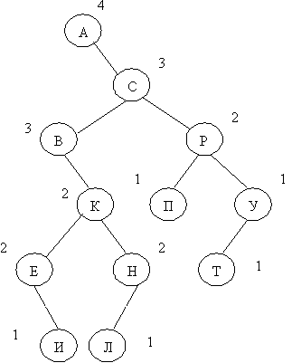
Рисунок 33 - Дерево, построенное приближенным алгоритмом А1
Второй алгоритм (А2) использует предварительно упорядоченный набор вершин. В качестве корня выбирается такая вершина, что разность весов левого и правого поддеревьев была минимальна. Для этого путем последовательного суммирования весов определим вершину Vk, для которой справедливы неравенства:
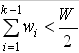
и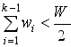
.Тогда в качестве "центра тяжести" может быть выбрана вершина Vk, Vk-1 или Vk+1, т. е. вершина, для которой разность весов левого и правого поддерева минимальна. Далее действия повторяются для каждого поддерева
Алгоритм на псевдокоде
Алгоритм А2(Root- указатель на корень дерева,
L, R - левая и правая границы рабочей части массива)

Пример. Рассмотрим процесс построения приближенного ДОП алгоритмом А2 для строки символов из предыдущего примера. Предварительно упорядочим символы по алфавиту.
Таблица 2 - Упорядоченный набор вершин
| А | В | Е | И | К | Л | Н | О | П | Р | Т | У |
| 4 | 3 | 2 | 1 | 2 | 1 | 2 | 3 | 1 | 2 | 1 | 1 |
В качестве корня дерева выбираем вершину V5=К, поскольку
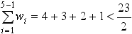
,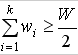
.Все вершины левее вершины V5 образуют левое поддерево, вершины правее V5 - правое поддерево. Далее алгоритм применяется для каждого из поддеревьев в отдельности. Посчитаем средневзвешенную высоту построенного дерева.
P=2.1+3.2+3.2+4.3+2.3+2.3+2.3+1.4+1.4+1.4+1.4+1.5=65
hср=65/23=2.82
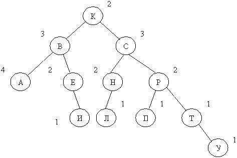
Рисунок 34 - Дерево, построенное приближенным алгоритмом А2
Приведем некоторые свойства рассмотренных приближенных алгоритмов:
Сложность алгоритмов как функция от n (количество элементов) зависит следующим образом: время Т = О(n log n), память М = О(n) при n
.
(Время определяется трудоемкостью сортировки элементов, а память
- размером массива для хранения элементов)
Дерево, построенное приближенным алгоритмом А1, равносильно случайному (с точки зрения средней высоты) при n
,
т.е. алгоритм А1- плохой.
Дерево, построенное приближенным алгоритмом А2, асимптотически приближается к оптимальному (с точки зрения средней высоты) при n
,
т.е. алгоритм А2 является хорошим.
ИСДП нельзя считать даже приближением к дереву оптимального поиска.
Контрольные вопросы
- Сформулируйте задачу построения ДОП.
- Что такое ДОП?
- Что такое средневзвешенная высота ДОП?
- Сформулируйте основные свойства ДОП.
- Назовите приближенные алгоритмы построения ДОП.
- Назовите основные свойства приближенных алгоритмов ДОП.